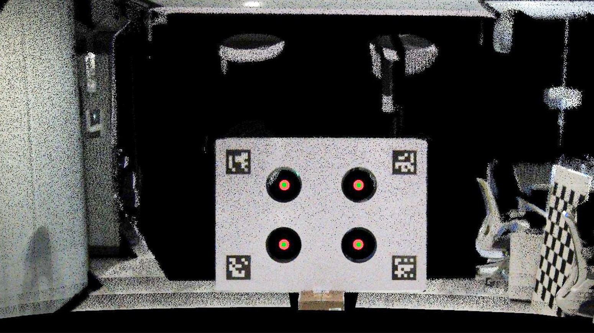
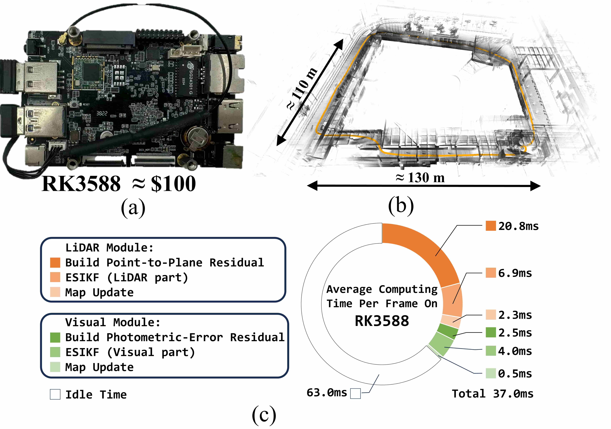
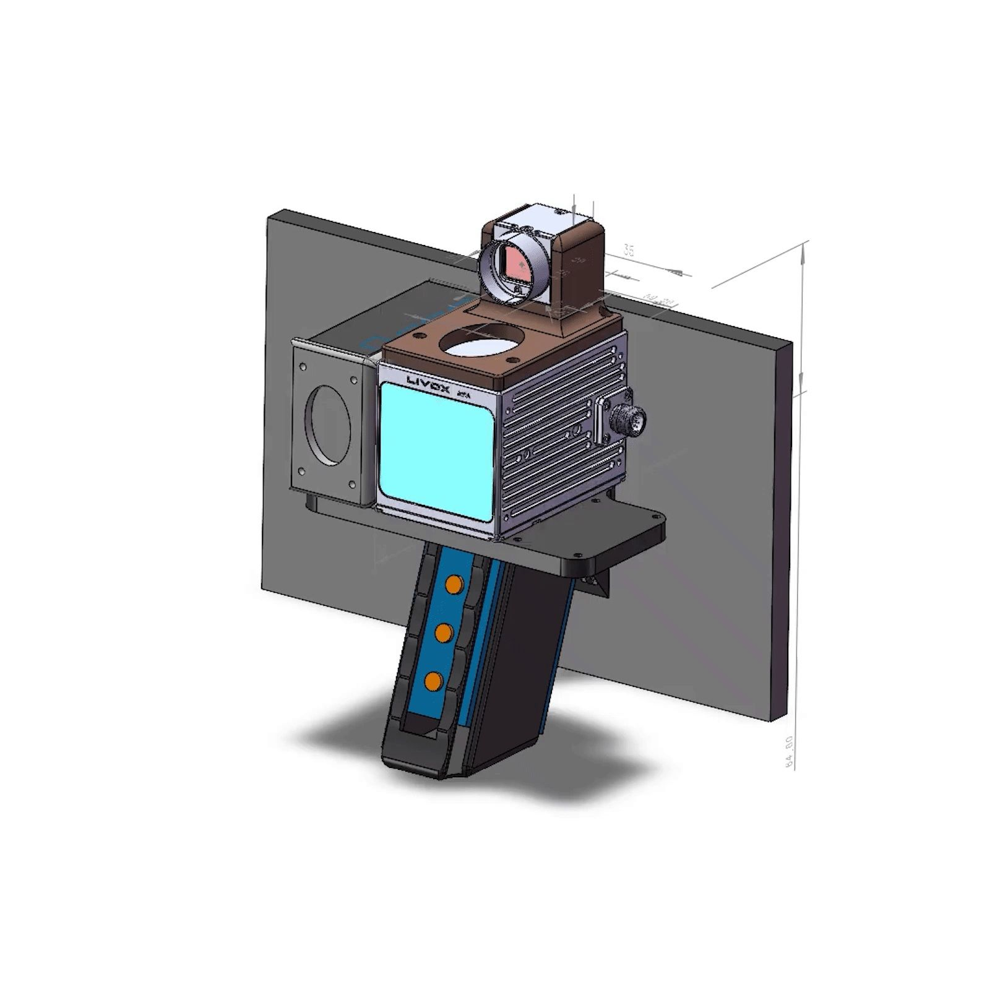

News
Scroll to view more
×
|
News
Scroll to view more
×
|
Featured ResearchMy research interests center on spatial intelligence powered by LiDAR-vision fusion, specifically including calibration, multi-sensor fusion, implicit-explicit combined 3D reconstruction, and semantic mapping. |
|  |
FAST-Calib: LiDAR-Camera Extrinsic Calibration in One Second
Chunran Zheng, Fu Zhang In Revision Paper / Code An efficient target-based extrinsic calibration tool for LiDAR-camera systems (e.g., FAST-LIVO2), making extrinsic calibration as straightforward as intrinsic calibration. |
|
FAST-LIVO: Fast and Tightly-coupled Sparse-Direct LiDAR-Inertial-Visual Odometry
Chunran Zheng, Qingyan Zhu, Wei Xu, Xiyuan Liu, Qizhi Guo, Fu Zhang IEEE/RSJ International Conference on Intelligent Robots and Systems (IROS), 2022 Paper / Code / Bilibili / YouTube A fast, sparse-direct LiDAR-inertial-visual odometry system built upon two tightly-coupled and direct odometry subsystems: a VIO subsystem and a LIO subsystem. |
|
|
FAST-LIVO2: Fast, Direct LiDAR-Inertial-Visual Odometry
Chunran Zheng, Wei Xu, et al IEEE Transactions on Robotics (TRO), 2025 Paper / Code / Bilibili / YouTube FAST-LIVO2 is a supercharged upgrade of FAST-LIVO, integrating visual and LiDAR data within a single unified voxel map. The system achieves pixel-level reconstruction and robust onboard state estimation, even under severe LiDAR degeneration. It further demonstrates its capability through diverse downstream applications, including textured mesh, 3DGS, navigation, and airborne mapping, establishing a solid foundation for LiDAR-visual spatial AI. |
|
|  |
FAST-LIVO2 on ARM: State Estimation with Efficient Memory and Computation
Bingyang Zhou, Chunran Zheng (co-first author), Ziming Wang, Fangcheng Zhu, Yixi Cai, Fu Zhang IEEE Robotics and Automation Letters (RA-L), 2025 Paper A lightweight adaptation of FAST-LIVO2 for ARM platforms (e.g., RK3588 and Orin NX). |
|
GS-LIVO: Real-Time LiDAR, Inertial, and Visual Multi-sensor Fused Odometry with Gaussian Mapping
Sheng Hong, Chunran Zheng (co-first author), Fu Zhang, Tong Qin, Shaojie Shen IEEE Transactions on Robotics (TRO), 2025 Paper / Code The first real-time Gaussian-based LIVO system enabling photorealistic and high-fidelity scene representation. |
|
|  |
LiDAR-Inertial-Visual Handhold and UAV Device
Chunran Zheng, Sheng Hong, Tianyong Ye, Junjie He Open-source project Code Hardware-synchronized Handheld and UAV device for FAST-LIVO, delivering the first proven open-source solution for Modular 3D Scanner. |
Academic ServiceReviewer of:
|